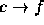
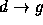
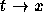

Any one-to-one mapping, f, of any alphabet to itself can be
used to encode text by replacing each occurrence of any letter, c, with
f(c).
One such mapping could be the mapping of a letter to
three positions beyond the letter in the alphabet.
That is, , ,  ,  and so on.
With this mapping,
``The car is blue'' will be encoded as ``Wkh fdu lv eoxh''.
The input begins with a single positive integer on a line by itself
indicating the number of the cases following, each of them as described below.
This line is followed by a blank line, and there is also a blank line between
two consecutive inputs.
Your correct program should decodes the contents of each input set according
to the following guidelines:
- Only letters are encoded. Letters are mapped to letters.
Uppercase letters are different from their lowercase counter parts.
- The mapping that defines the encoding is one-to-one. That
is, two different letters never map to the same letter of the
alphabet ( and  is impossible).
- There are two input lines -
the first one contains a text (not encoded) and
the second one contains an encoded text.
This text is to be decoded by your program.
- Both lines are written by the same person.
-
It is to be assumed that any
person uses letters of the alphabet with the same RELATIVE
FREQUENCY from document to document and no two letters are
used with the same frequency.
That is, the most frequently used letter in the first line maps to the most frequently used letter in the second one; the second most frequently used letter maps to the second most frequently used letter and so on.
The outputs of two consecutive cases will be separated by a blank line.
1
abacxbacac
qqqqqrrrrssstt
aaaaaccccbbbxx